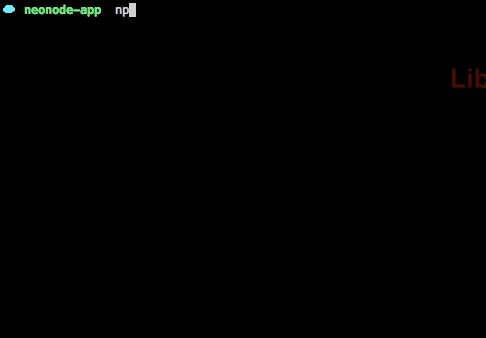
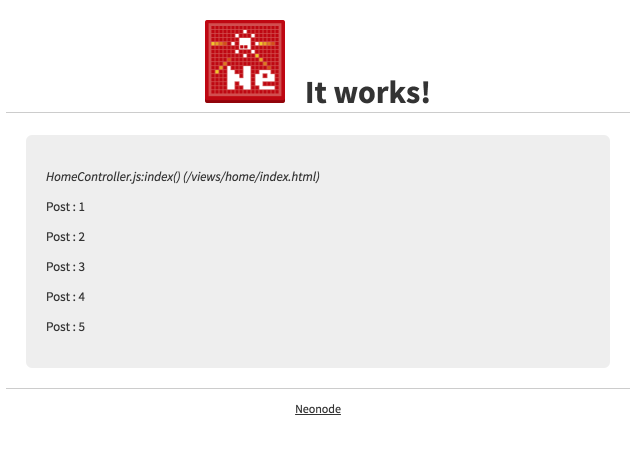
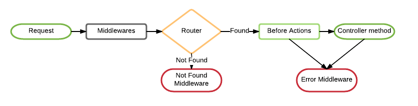

v0.0.3
A Yeoman generator to scaffold an opinionated minimalistic MVC framework
Installation
First you need to install yeoman and neonode's generator:
$ npm install -g yo generator-neonode
Now run neonode's generator:
$ yo neonode
Just follow the instructions.
In this example we will use the name neonode-app for our project.
If you don't set a project name it will create the project in the current directory.
neonode uses webpack to compile its assets, to do it run:
$ webpack -d
And finally to start the server run:
$ npm start

Now point your browser to http://localhost:3000 you should see something like this:

Project Structure
binexecutable filesconfigconfig.jsgeneral app configurationmiddlewares.jsThis file specifies the middlewares and the order they will be loaded- RouteMappings.js Here you will set the routes.
controllersNeon.js classes to handle the web requestslibYou'll put custom libraries hereboot.jsHere you can add code or modules that needs to run after the controllers and models are loadedlogApplication logs go here, you will find different logs depending of the value of your NODE_ENV variable, the default isdevelopment.logmiddlewaresExpress middlewares go here.migrationsKnex generated migrations will be here.modelsThis holds the Krypton-ORM classes that model and wrap the data stored in the application's databasepublicLike the public directory for a web server, this directory has web files that don't change, such as JavaScript files (public/js), graphics (public/img), stylesheets (public/css), and HTML files (public).viewsThis holds the display Thulium templates to fill in with data from our application, convert to HTML, and return to the user's browser.layoutsHolds the template files for layouts to be used with views. This models the common header/footer method of wrapping views.
Main Dependencies
Routing
Routing refers to determining how an application responds to a client request to a particular endpoint, which is a URI (or path) and a specific HTTP request method (GET, POST, and so on).
The Router recognizes URLs and dispatches them to a controller's action. The RouteMappings can also generate paths and URLs, avoiding the need to hardcode strings in your views.
With Route Mappings you can generate Rails Style Routing and RESTFul mappings to use them as express routes.
The following code is an example of a very basic route:
config/RouteMappings.js
When a neonode application receives an incoming request for:
GET /login
It asks the route mapper to match it to a controller action. If the first matching route is:
RouteMappings.get('/login', { to: 'Sessions#new', as: 'login' })
The request is dispatched to the SessionsController 'new' action.
You can also use Resource Routing
A resourceful route provides a mapping between HTTP verbs and URLs to controller actions. By convention, each action also maps to particular CRUD operations in a database. A single entry in the routing file, such as:
RouteMappings.resources(['/Users']);
The above creates seven different routes in your application, all mapping to the UsersController:
| HTTP Verb | Path | Controller#action | Used for |
|---|---|---|---|
| GET | /users | Users#index | display a list of all users |
| GET | /users/new | Users#new | return an HTML form for creating a new user |
| POST | /users | Users#create | create a new user |
| GET | /users/:id | Users#show | display a specific user |
| GET | /users/:id/edit | Users#edit | return an HTML form for editing a user |
| PATCH/PUT | /users/:id | Users#update | update a specific user |
| DELETE | /users/:id | Users#destroy | delete a specific user |
Take a look at Route Mapping documentation for more options and examples.
Middlewares
The Middleware are functions that have access to the express's request object (req), the express's response object (res), and the next middleware callback in the application’s request-response cycle.
A Middleware function can perform the following tasks:
- Execute any code.
- Make changes to the request and the response objects.
- End the request-response cycle.
- Call the next middleware in the stack.
You can add more middlewares to the middlewares/ directory and the config/middlewares.js registry, just follow the express's middlewares pattern. These middlewares are express's application level middlewares.
Controllers
After routing has determined which controller to use for a request, your controller is responsible for making sense of the request and producing the appropriate output.
A controller can thus be thought of as a middle man between models and views. It makes the model data available to the view so it can display that data to the user, and it saves or updates data from the user to the model.
The controller's methods follow the same patter as Express router-level middlewares.
The naming convention of controllers favors pluralization of the last word in the controller's name. For example, ClientsController, SiteAdminsController, UsersController and so on.
Before Actions
The beforeActions is a static class variable set in any controller that holds a set middlewares that are run before any specific controller method(s).
Another Example
Mehtods / Actions
A controller is a class which inherits from BaseController or RestfulController and has methods just like any other class. When your application receives a request, the routing will determine which controller and action to run, then Neonode gets that controller instance and runs the method with the same name as the action.
Parameters
You will probably want to access data sent in by the user or other parameters in your controller actions. There are three kinds of parameters possible in a web application.
req.queryThe first are parameters that are sent as part of the URL, called query string parameters. The query string is everything after "?" in the URL.req.bodyThe second type of parameter is usually referred to as POST data. This information usually comes from an HTML form which has been filled in by the user. It's called POST data because it can only be sent as part of an HTTP POST request.req.paramsThe third are route parameters. Sometimes you will need to capture segments of the URI within your route.- For example, you may need to capture a user's ID from the URL. You may do so by defining route parameters:
RouteMappings.get('/users/:id'...) - Route parameters always start with
:
- For example, you may need to capture a user's ID from the URL. You may do so by defining route parameters:
Sessions
Your application has a session for each user in which you can store small amounts of data that will be persisted between requests. The session is only available in all middlewares and the views in the req.session
To enable sessions you need to:
- Install Redis
- Ensure
sessionskey in theconfig.jsis not set to false for your environmentsessions : { key : 'some-key', secret : 's0m3-b4c0n' } - You could always use your own session middleware like
JWT
The Flash
The flash is a special part of the session which is cleared with each request. This means that values stored there will only be available in the next request, which is useful for passing error messages etc.
To access the flash object in the views:
<%= flash.success %>
Neonode's request flow
Models and Migrations
Migrations
Migrations are a convenient way to alter your database schema over time in a consistent and easy way. We choose Knex tho handle this so that you don't have to write SQL by hand, allowing your schema and changes to be database independent.
The migration CLI is bundled with the knex install. To install globally, run:
$ npm install -g knex
Migrations use a knexfile.js, that is in the root directory of your application, which specify various configuration settings for the knex module.
Once you have edited the knexfile.js, you can use the migration tool to create migration files to the specified directory (default migrations). Creating new migration files can be achieved by running:
$ knex migrate:make migration_name
Read more on Knex Documentation
Once you have finished writing the migrations, you can update the database matching your NODE_ENV by running:
knex migrate:latest
You can also pass the --env flag or set NODE_ENV to select an alternative environment:
$ knex migrate:latest --env production
# or
$ NODE_ENV=production knex migrate:latest
To rollback the last batch of migrations:
$ knex migrate:rollback
Models
We build Krypton-ORM to handle the model part of this MVC framework. The model is the layer of the system responsible for representing business data and logic. Krypton-ORM facilitates the creation and use of business objects whose data requires persistent storage to a database.
Krypton-ORM:
- Is Opinionated
- Is Promised based
- Is built on top of Knex
- Has some ideas taken from objection.js but simpler, like the relation eager loader
- Implements Relations
- HasOne
- HasMany
- HasManyThrough
- Implements
ActiveRecordstyle hooks- beforeValidation
- afterValidation
- beforeSave
- beforeCreate
- beforeUpdate
- afterCreate
- afterUpdate
- afterSave
- beforeDestroy
- afterDestroy
See more examples in Krypton-ORM repo.
Views
As you may know, the Controller is responsible for orchestrating the whole process of handling a request, though it normally hands off any heavy code to the Model. But then, when it's time to send a response back to the user, the Controller hands things off to the View.
Templates
View files are Thulium templates with a default .html extension and they go in the /views directory of your application.
You will use express response methods like render or json to send these views to the user.
Or the express response json method to send raw data instead of a view
Or combine them both:
As you can see res.render method auto prefix /views/ to the template path. Also res.render second parameter is an object that contains the variables that the view will use, this parameter is optional.
Another way to pass variables or helper functions to the templates is in the res.locals object. Each time a template is rendered the res.locals object is merged to the res.render second parameter object.
Layouts
Layouts are a kind of template that is used to wrap other templates like the common header/footer method of wrapping views.
Layout templates go in views/layouts/
You tell the layout where to render other views with the yield keyword:
Which layout to use in any controller method/action is specified as another template's variable.
Partials
Partial templates are another device for breaking the rendering process into more manageable chunks. To render a partial as part of a view, you use the renderPartial method within the view:
The partials has access to the same variables as the template that is calling it. However you can also pass locals variables to the partial call
Contributing to Neonode
Neonode is not perfect, and it has bugs or incomplete features. You're welcome to tell us, or to contribute some code. This document describes details about how can you contribute to this project.
Contribution guidelines
Depends on the situation, you will:
- Find a bug and create an issue
- Need more functionality and make a feature request
- Want to contribute code and open a pull request
- Run into an issue and need help
Bug Report
If you find something you consider a bug, please create a issue on GitHub. To avoid wasting time and reduce back-and-forth communication with team members, please include at least the following information in a form comfortable for you:
- Bug Description
- Neonode Version
- System Type
- Error Log
- Other Information
Please take a moment to check that an issue on GitHub doesn't already exist documenting your bug report or improvement proposal. If it does, it never hurts to add a quick "+1" or "I have this problem too". This will help prioritize the most common problems and requests.
Feature Request
There is no standard form of making a feature request. Just try to describe the feature as clearly as possible, because team members may not have experience with the functionality you're talking about.
Pull Request
Pull requests are always welcome, but note that ALL PULL REQUESTS MUST APPLY TO THE development BRANCH.
We are always thrilled to receive pull requests, and do our best to process them as fast as possible. Not sure if that typo is worth a pull request? Do it! We will appreciate it.
If your pull request is not accepted on the first try, don't be discouraged! If there's a problem with the implementation, hopefully you received feedback on what to improve.
We're trying very hard to keep Neonode lean and focused. We don't want it to do everything for everybody. This means that we will decide against incorporating a new feature.
Code of conduct
As contributors and maintainers of this project, we pledge to respect all people who contribute through reporting issues, posting feature requests, updating documentation, submitting pull requests or patches, and other activities.
We are committed to making participation in this project a harassment-free experience for everyone, regardless of level of experience, gender, gender identity and expression, sexual orientation, disability, personal appearance, body size, race, age, or religion.
Examples of unacceptable behavior by participants include the use of sexual language or imagery, derogatory comments or personal attacks, trolling, public or private harassment, insults, or other unprofessional conduct.
Project maintainers have the right and responsibility to remove, edit, or reject comments, commits, code, wiki edits, issues, and other contributions that are not aligned to this Code of Conduct. Project maintainers who do not follow the Code of Conduct may be removed from the project team.
This Code of Conduct is adapted from the Contributor Covenant, version 1.0.0, available at http://contributor-covenant.org/version/1/0/0/